CatGen: Catalysis Generator
Currently, the primary function of CatGen is for automated enumeration of various systems of atoms and other catalytically relevant properties. This is performed through symmetries which exist in these chemical systems. These symmetries take the form of translations and rotations in bulk structures where well defined lattices exist. For gas-phase, symmetries are defined through bonds formation rules.
By conserving bond-formation order and pairing it with bulk symmetry enumerations, a comprehensive mapping tools of all possible relevant chemical pathways can be produced. This information can then be aggregated and used to gain insights into catalytic systems.
Current enumerations include:
[X]Surfaces structures[X]Adsorption sites[X]Catalytic structures[X]Gas phase molecules[X]Reaction mechanisms[X]Reaction routes
1 Enumerations
1.1 Surface module:
The surface module is designed to leverage information about the bulk structure which a slab is derived from.
[X]Surfaces produced from all user defined bulk lattices[X]Any miller indices[X]Unique terminations of possible surfaces[X]Surface atom identification[X]Voronoi connectivity of slab atoms[X]Enumerate surface adsorption sites
1.1.1 Slab enumeration:
Example surface generation for the 2 terminations of a fcc(211) surface construction of an L10 CuPd3 cubic alloy.
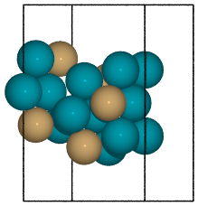 
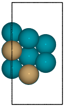 
from catkit.gen.surface import SlabGenerator from ase.build import bulk from ase.visualize import view # Make a test slab atoms = bulk('Pd', 'fcc', cubic=True) atoms[3].symbol = 'Cu' gen = SlabGenerator( atoms, miller_index=(2, 1, 1), layers=9, fixed=5, vacuum=4) terminations = gen.get_unique_terminations() images = [] for i, t in enumerate(terminations): images += [gen.get_slab(iterm=i)] view(images)
For convenience, the catkit.build module has a surface constructor which takes any arguments for ASE's bulk generators as well as the SlabGenerator.
from catkit.build import surface from ase.build import bulk # Make a test slab atoms = bulk('Pd', 'fcc', cubic=True) atoms[3].symbol = 'Cu' slab = surface(atoms, size=(1, 1, 9), miller=(2, 1, 1), vacuum=9, fixed=5) slab.edit()
1.1.2 Slab graph and surface atoms:
One of the less visual features is the identification of the surface atoms and identification of nearest-neighbors which is subsequently used for creating graph edges. When performing more sophisticated operations, such as adsorption site identification, these functions are being called automatically.

Figure 1: Slab of hcp Pd with (110) miller index. Top surface atoms have been changed to Au.
from catkit.gen.surface import SlabGenerator from ase.build import bulk from ase.io import write from ase import Atom bulk = bulk('Pd', 'hcp', a=3, cubic=True) gen = SlabGenerator( bulk, miller_index=(1, 1, 0), layers=6, vacuum=4) atoms = gen.get_slab() print(atoms.connectivity) for i in atoms.get_surface_atoms(): atoms[i].symbol = 'Au' atoms.edit()
[[0 2 2 2 0 1 0 0 0 0 0 0] [2 0 2 2 1 0 0 0 0 0 0 0] [2 2 0 2 2 2 1 0 0 0 0 0] [2 2 2 0 2 2 0 1 0 0 0 0] [0 1 2 2 0 2 2 2 1 0 0 0] [1 0 2 2 2 0 2 2 0 1 0 0] [0 0 1 0 2 2 0 2 2 2 1 0] [0 0 0 1 2 2 2 0 2 2 0 1] [0 0 0 0 1 0 2 2 0 2 2 2] [0 0 0 0 0 1 2 2 2 0 2 2] [0 0 0 0 0 0 1 0 2 2 0 2] [0 0 0 0 0 0 0 1 2 2 2 0]]
CatGen automatically attaches the connectivity matrix into a NetworkX graph and stores it in the Gratoms object for future use.
1.1.3 Simple site enumeration:
With a generated slab, we can also produce the unique adsorption sites which would be present on a given surface.
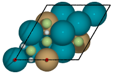
Figure 2: Symmetry unique sites of CuPd3 (111). Green denote 3-fold hollows, white are bridge, and red are top sites.
from catkit.gen.surface import SlabGenerator from ase.build import bulk from ase import Atom bulk = bulk('Pd', 'fcc', a=5, cubic=True) bulk[3].symbol = 'Cu' gen = SlabGenerator( bulk, miller_index=(1, 1, 1), layers=3, vacuum=10) atoms = gen.get_slab() coordinates, connectivity = gen.adsorption_sites(atoms) atm = {1: 'X', 2: 'He', 3: 'F'} for i, c in enumerate(coordinates): typ = connectivity[i] atoms += Atom(atm[typ], c + [0, 0, 2]) atoms.edit()
1.2 Adsorption module
Using the AdsorptionSites class form the adsorption module provides more powerful tools for surface site enumeration.
[X]Adsorption site enumeration based on user defined surface atoms.[X]1st and 2nd (rank) nearest neighbor topology of surface atoms.[X]Connectivity of adsorption site (hollow = 3, bridge = 2, top = 1)[X]2D adsorption coordinates relative to miller index.[X]Adsorption vectors for accurate 3D projection.[X]Connectivity between adsorption sites
1.2.1 ``Manual'' Adsorption site enumeration and visualization:
Adsorption site enumeration in CatGen is solely dependent upon surface atom identification. This is performed automatically using catkit.gen.surface.SlabGenerator or catkit.build.surface, however, this function relies upon bulk properties which are not always available.
Here, we show how the surface sites can be assigned manually which is often convenient enough.
Surface atoms are used to define top sites (green), which are then used to define remaining sites (red) via Delaunay triangulation symmetries.
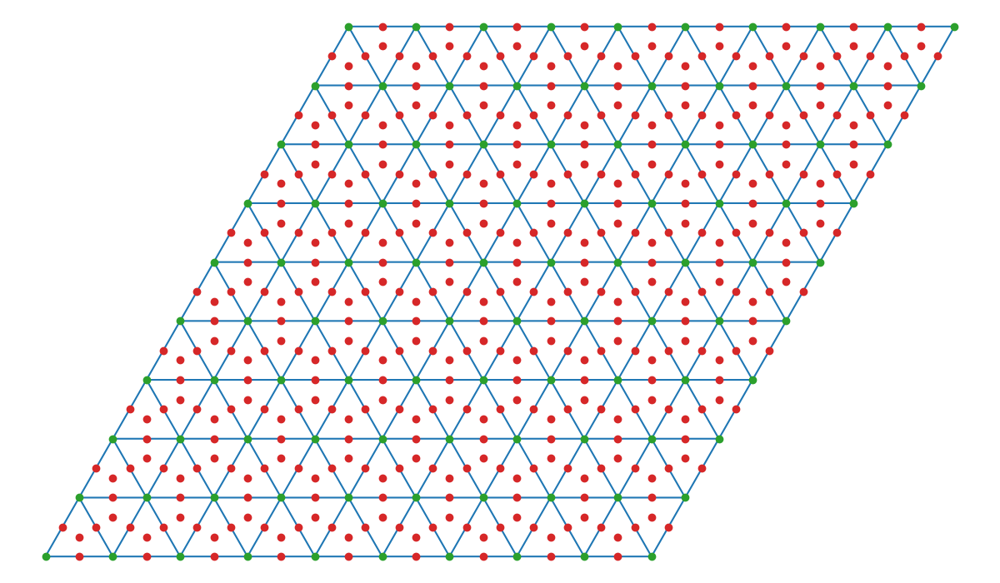
Figure 3: Delaunay triangulation of surface atoms for fcc(111) structure.
from catkit.gen.adsorption import AdsorptionSites from catkit.gen.surface import SlabGenerator from ase.build import bulk bulk = bulk('Pd', 'fcc', a=5, cubic=True) bulk[3].symbol = 'Cu' gen = SlabGenerator( bulk, miller_index=(1, 1, 1), layers=3, vacuum=4) atoms = gen.get_slab() atoms.set_surface_atoms([8, 9, 10, 11]) sites = AdsorptionSites(atoms) sites.plot('./Pd3Cu-adsorption-sites.png')
1.2.2 Extended site enumeration:
For more complex adsorption enumeration, we often require more detailed information.
The AdsorptionSite class also produces an expanded unit cell which is useful for operations which require observation of periodic boundary conditions. This extended unit cell can be accessed by toggling the screen argument.
All possible adsorption sites of of CuPd3 (321). Site identifications are the same as above with the addition of blue which shows 4-fold hollow sites.
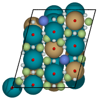
Figure 4: Unique adsorption site enumeration for fcc(321) alloy.
from catkit.gen.adsorption import AdsorptionSites from catkit.gen.surface import SlabGenerator from ase.build import bulk from ase.io import write from ase import Atom bulk = bulk('Pd', 'fcc', a=5, cubic=True) bulk[3].symbol = 'Cu' gen = SlabGenerator( bulk, miller_index=(3, 2, 1), layers=13, vacuum=5) atoms = gen.get_slab(size=1) sites = AdsorptionSites(atoms) # Positon of each site coordinates = sites.get_coordinates() # Number of adjacent surface atoms connectivity = sites.get_connectivity() # The indices of adjacent surface atoms topology = sites.get_topology() # Only print every 5th entry. print('Coordinates:\n', coordinates[::5], '\n') print('Connectivity:\n', connectivity[::5], '\n') print('Topology:\n', topology[::5], '\n') periodic = sites.get_periodic_sites() print('Sites by periodicity:\n', periodic[::5], '\n') symmetric = sites.get_symmetric_sites() print('Sites by symmetry:\n', symmetric[::5]) atm = {1: 'X', 2: 'He', 3: 'F', 4: 'N'} for i, c in enumerate(coordinates): typ = connectivity[i] atoms += Atom(atm[typ], c + [0, 0, 2]) atoms.edit()
When we call get_periodic_sites(), we see that some indices are repeated. This is to indicate that these sites are identical in the context of periodic boundaries. If we set screen to True, we will only be given the sites within the original unit cell (between 0-1 in fractional coordinates) and all indices will be unique.
In this case there are no symmetrically reducible sites, so get_symmetric_sites() returns the same result.
NOTE: The indices of the periodic and symmetry site functions are in reference to the extended unit cell.
1.2.3 Adsorption vectors
The most commonly studied miller indices, such as fcc(111), produce a flat surface. This means the most favorable angle of adsorption will always be perpendicular to the surface. This is not always the case for higher miller indices.
CatGen defines the most favorable vector for adsorption as the one which is furthest from all neighboring surface atoms. This vector is important for the generation of sensible 3D structures from graph enumerations. This is particularly true for adsorbates with multiple atoms.
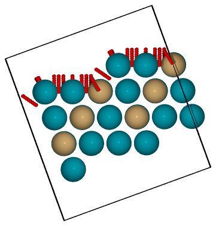
Figure 5: Illustration of adsorption vectors (red dots) on a CuPd3 (211) surface.
from catkit.gen.adsorption import AdsorptionSites from catkit.gen.surface import SlabGenerator from ase.build import bulk from ase import Atom import numpy as np bulk = bulk('Pd', 'fcc', a=5, cubic=True) bulk[3].symbol = 'Cu' gen = SlabGenerator( bulk, miller_index=(2, 1, 1), layers=10, vacuum=5) atoms = gen.get_slab() sites = AdsorptionSites(atoms) coordinates = sites.get_coordinates() vectors = sites.get_adsorption_vectors() heights = np.arange(0, 2, 0.25) for i, c in enumerate(coordinates): for h in heights: atoms += Atom('X', c + vectors[i] * h) atoms.wrap() atoms.edit()
1.2.4 Adsorption structure builder
Creating good initial guesses for 3D structures can be tedious to perform by hand, even for small molecules. The Builder module in the adsorption package seeks to help automate this task.
The Builder module currently takes Gratoms objects as input only since graph information is required.
from catkit.gen.surface import SlabGenerator from catkit.gen.adsorption import Builder from ase.build import bulk import numpy as np atoms = bulk('Pd', 'fcc', a=4, cubic=True) atoms[3].symbol = 'Cu' gen = SlabGenerator( atoms, miller_index=(1, 1, 1), layers=4, fixed=2, vacuum=10) slab = gen.get_slab() builder = Builder(slab) print(builder)
Adsorption builder for Cu4Pd12 slab. unique adsorption sites: 9 site connectivity: [1 1 2 2 2 3 3 3 3] unique adsorption edges: 21
- Monodentate adsorption
When a single atom of the molecule is considered bonded to the surface, the builder attempts to arrange non-bonded atoms in an intelligent fashion.
In this example, the use of
-1as a tag on the adsorbate is used to indicate it is bonded to the slab.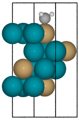 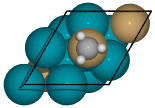
from catkit.build import molecule from catkit.gen.surface import SlabGenerator from catkit.gen.adsorption import Builder from ase.build import bulk atoms = bulk('Pd', 'fcc', a=4, cubic=True) atoms[3].symbol = 'Cu' gen = SlabGenerator( atoms, miller_index=(1, 1, 1), layers=4, vacuum=4) slab = gen.get_slab() adsorbate = molecule('CH3')[0] adsorbate.set_tags([-1, 0, 0, 0]) builder = Builder(slab) ads_slab = builder.add_adsorbate(adsorbate, index=0) ads_slab.edit()
- Bidentate adsorption
The
Builderclass can also produce structures for species bonded in two locations. In this example, indexing of the atoms which bond to the surface is done with thebondskey.Also, using setting the
indexkey to-1will return a list of all the possible adsorbed structures.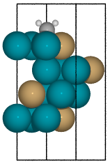 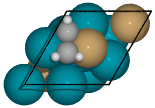
from catkit.build import molecule from catkit.gen.surface import SlabGenerator from catkit.gen.adsorption import Builder from ase.build import bulk from ase.visualize import view atoms = bulk('Pd', 'fcc', a=4, cubic=True) atoms[3].symbol = 'Cu' gen = SlabGenerator( atoms, miller_index=(1, 1, 1), layers=4, vacuum=4) slab = gen.get_slab() adsorbate = molecule('C2H3')[1] builder = Builder(slab) ads_slab = builder.add_adsorbate(adsorbate, bonds=[0, 1], index=-1) print('{} adsorption structures generated'.format(len(ads_slab))) view(ads_slab)
1.3 Gas-phase:
[X]Various chemical species (C, H, and O currently tested)[X]Molecules with single bonds[X]Molecules with double bonds[X]Molecules with triple bonds[X]Molecules with single cyclical groups[X]Molecules with double cyclical groups[X]Molecules with triple cyclical groups[X]UFF 3D structure predictions
1.3.1 Example usage:
Below is an example script which generates some simple figures using NetworkX code for all molecules up to C2H6.
 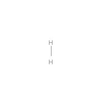
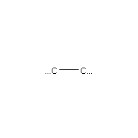 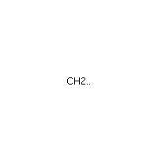 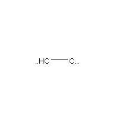 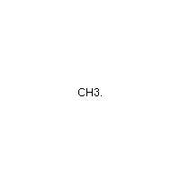
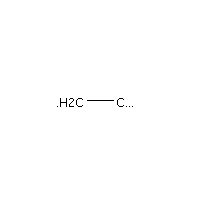 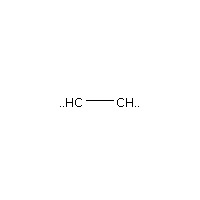 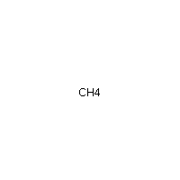 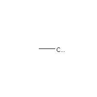
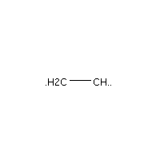 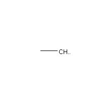 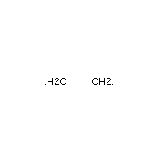 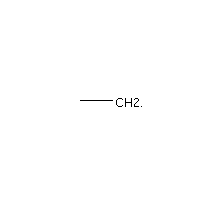
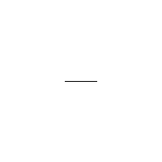
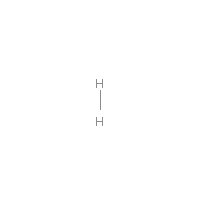
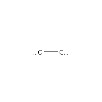 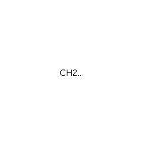 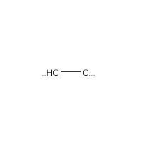 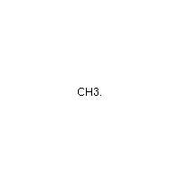
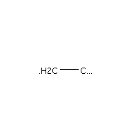 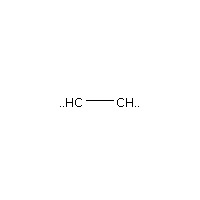 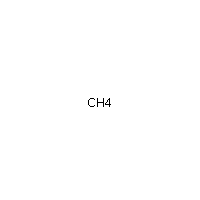 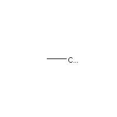
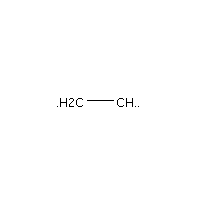 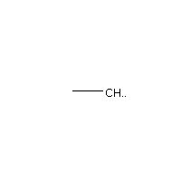 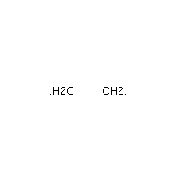 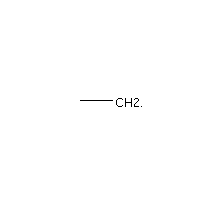
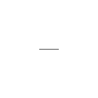
from catkit.gen.pathways import ReactionNetwork import time start = time.time() db_name = 'C2H6-example.db' with ReactionNetwork(db_name=db_name) as rn: # Run a molecule search rn.molecule_search( element_pool={'C': 2, 'H': 6}, multiple_bond_search=False) print('Process completed in {:.1f}s'.format(time.time() - start))
Process completed in 0.0s
1.4 Reaction mechanisms:
[X]Addition and Reduction reactions (R1 + R2 <–> P1)[X]Bond formation / breaking pathways (R1 <–> P1)[X]Reconfiguration reactions (R1 <–> R1*)[X]Substitution reactions (R1 + R2 <–> P1 + P2)
1.4.1 Reaction networks:
Enumeration of possible elementary reaction steps for gas-phase C2H6 species.
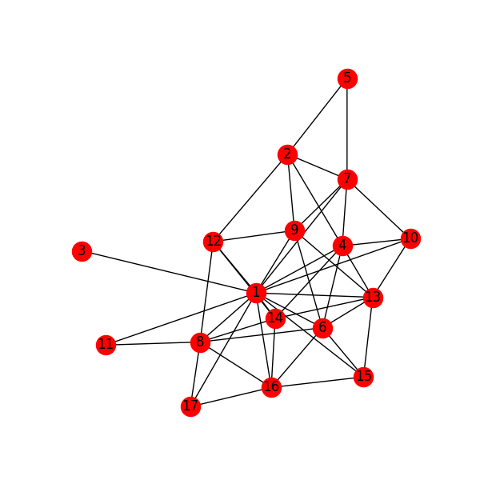
Figure 6: Reaction network for C2H6 gas phase molecules. Numbers are indexes from the gas-phase example figures.
Pathway exploration is currently integrated with gas-phase molecule search. See the gas-phase molecule search example for further details on molecule generations. Below, a reaction network is generated.
from catkit.gen.pathways import ReactionNetwork import time start = time.time() # Load existing database db_name = 'C2H6-example.db' with ReactionNetwork(db_name=db_name) as rn: # Substitution pathway search is expensive! rn.path_search( reconfiguration=False, substitution=False) rn.plot_reaction_network(file_name='../static/reaction-network.png') print('Process completed in {:.1f}s'.format(time.time() - start))
Process completed in 0.3s
Once the reaction network has been produce, we can illustrate the potential pathways using the following code.
from catkit.gen.pathways import ReactionNetwork import numpy as np import networkx as nx from ase.utils import formula_hill with ReactionNetwork(db_name='C2H6-example.db') as rn: molecules = rn.load_molecules() pathways = rn.load_pathways() names = np.empty(len(molecules) + 1, dtype='a5') names[0] = '' for k, v in molecules.items(): atn = nx.get_node_attributes(v.graph, 'number') # These are not always unique identifiers hill = formula_hill(list(atn.values())) names[k] = hill for path in pathways: print('|{} + {} --> {} + {}|'.format(*names[path]))
| b'H' + b'H' –> b'' + b'H2' |
| b'H' + b'H' –> b'' + b'H2' |
| b'H' + b'C' –> b'' + b'CH' |
| b'H' + b'C' –> b'' + b'CH' |
| b'H' + b'CH' –> b'' + b'CH2' |
| b'H' + b'CH' –> b'' + b'CH2' |
| b'H' + b'C2' –> b'' + b'C2H' |
| b'H' + b'C2' –> b'' + b'C2H' |
| b'H' + b'CH2' –> b'' + b'CH3' |
| b'H' + b'CH2' –> b'' + b'CH3' |
| b'H' + b'C2H' –> b'' + b'C2H2' |
| b'H' + b'C2H' –> b'' + b'C2H2' |
| b'H' + b'C2H' –> b'' + b'C2H2' |
| b'H' + b'C2H' –> b'' + b'C2H2' |
| b'H' + b'CH3' –> b'' + b'CH4' |
| b'H' + b'CH3' –> b'' + b'CH4' |
| b'H' + b'C2H2' –> b'' + b'C2H3' |
| b'H' + b'C2H2' –> b'' + b'C2H3' |
| b'H' + b'C2H2' –> b'' + b'C2H3' |
| b'H' + b'C2H2' –> b'' + b'C2H3' |
| b'H' + b'C2H2' –> b'' + b'C2H3' |
| b'H' + b'C2H2' –> b'' + b'C2H3' |
| b'H' + b'C2H3' –> b'' + b'C2H4' |
| b'H' + b'C2H3' –> b'' + b'C2H4' |
| b'H' + b'C2H3' –> b'' + b'C2H4' |
| b'H' + b'C2H3' –> b'' + b'C2H4' |
| b'H' + b'C2H3' –> b'' + b'C2H4' |
| b'H' + b'C2H3' –> b'' + b'C2H4' |
| b'H' + b'C2H4' –> b'' + b'C2H5' |
| b'H' + b'C2H4' –> b'' + b'C2H5' |
| b'H' + b'C2H4' –> b'' + b'C2H5' |
| b'H' + b'C2H4' –> b'' + b'C2H5' |
| b'H' + b'C2H5' –> b'' + b'C2H6' |
| b'H' + b'C2H5' –> b'' + b'C2H6' |
| b'C' + b'C' –> b'' + b'C2' |
| b'C' + b'C' –> b'' + b'C2' |
| b'C' + b'CH' –> b'' + b'C2H' |
| b'C' + b'CH' –> b'' + b'C2H' |
| b'C' + b'CH2' –> b'' + b'C2H2' |
| b'C' + b'CH2' –> b'' + b'C2H2' |
| b'C' + b'CH3' –> b'' + b'C2H3' |
| b'C' + b'CH3' –> b'' + b'C2H3' |
| b'CH' + b'CH' –> b'' + b'C2H2' |
| b'CH' + b'CH' –> b'' + b'C2H2' |
| b'CH' + b'CH2' –> b'' + b'C2H3' |
| b'CH' + b'CH2' –> b'' + b'C2H3' |
| b'CH' + b'CH3' –> b'' + b'C2H4' |
| b'CH' + b'CH3' –> b'' + b'C2H4' |
| b'CH2' + b'CH2' –> b'' + b'C2H4' |
| b'CH2' + b'CH2' –> b'' + b'C2H4' |
| b'CH2' + b'CH3' –> b'' + b'C2H5' |
| b'CH2' + b'CH3' –> b'' + b'C2H5' |
| b'CH3' + b'CH3' –> b'' + b'C2H6' |
| b'CH3' + b'CH3' –> b'' + b'C2H6' |
1.5 Reaction routes
[X]Overall/Response reaction routes[X]Linearly independent set of reaction routes[X]Complete set of full reaction routes[X]Complete set of empty reaction routes[ ]Graph based enumeration
1.5.1 Overall/Response reaction routes
For a given set of elementary mechanisms, there is frequently many types of chemistry which could be considered simultaneously. As an example, we reproduce an example from the original literature which the algorithm is adopted from fishtik-2004-new-approac.
In this example, we choose the number of independent species.
from catkit.gen.route import get_response_reactions import numpy as np epsilon = np.array([ # To keep indexing consistent [ 0, 0, 0, 0], # I1 [ 0, 0, 0, 0], # I2 [ 0, 0, 0, 0], # I3 [ 0, 0, 0, 0], # I4 [ 0, 0, 0, 0], # I5 # C N H O [ 1, 0, 4, 0], # CH4 [ 0, 1, 0, 1], # NO [ 0, 0, 0, 2], # O2 [ 0, 2, 0, 0], # N2 [ 1, 0, 0, 1], # CO [ 1, 0, 0, 2], # CO2 [ 0, 0, 2, 1], # H2O ]) terminal = [5, 6, 7, 8, 9, 10, 11] OR, species = get_response_reactions(epsilon, terminal, species=True) print('Overall reaction routes:') print(OR, '\n') print('Terminal species:') print(species)
Overall reaction routes: [[ 0 0 0 0 0 0 2 -1 -1 0 0 0] [ 0 0 0 0 0 0 0 1 0 2 -2 0] [ 0 0 0 0 0 2 0 3 0 -2 0 -4] [ 0 0 0 0 0 1 0 2 0 0 -1 -2] [ 0 0 0 0 0 0 2 0 -1 2 -2 0] [ 0 0 0 0 0 2 6 0 -3 -2 0 -4] [ 0 0 0 0 0 1 4 0 -2 0 -1 -2] [ 0 0 0 0 0 1 0 0 0 -4 3 -2]]
Terminal species: [[ 5 6 7 8 9] [ 5 6 7 9 10] [ 5 6 7 9 11] [ 5 6 7 10 11] [ 5 6 8 9 10] [ 5 6 8 9 11] [ 5 6 8 10 11] [ 5 6 9 10 11]]
The terminal species matrix will always contain s + 1 entries, where s is the number of elements in the chemistry. This does not necessarily mean that the overall reaction produced will include all s + 1 species.
1.5.2 Linearly independent set
Currently, only Happel-Sellers reaction routes can be enumerated fishtik-2004-new-approac. These routes require that the user choose a number of terminal species equal to s + 1. The terminal species selected will only produce overall reactions associated with the chemistry which is enumerated in the previous example.
Below we take another example from to produce a linearly independent set of reaction routes fishtik-2004-react-route-graph-2.
from catkit.gen.route import get_response_reactions from catkit.gen.route import get_heppel_sellers import numpy as np nu = np.array([ # H2Os, COs, CO2s, H2s, Hs, OHs, Os, HCOOs, H2O, CO, CO2, H2 [ 0, 1, 0, 0, 0, 0, 0, 0, 0, -1, 0, 0], # s1 [ 1, 0, 0, 0, 0, 0, 0, 0, -1, 0, 0, 0], # s2 [ 0, 0, -1, 0, 0, 0, 0, 0, 0, 0, 1, 0], # s3 [ 0, 0, 0, 1, -2, 0, 0, 0, 0, 0, 0, 0], # s4 [ 0, 0, 0, -1, 0, 0, 0, 0, 0, 0, 0, 1], # s5 [ -1, 0, 0, 0, 1, 1, 0, 0, 0, 0, 0, 0], # s6 [ 0, -1 , 1, 0, 0, 0, -1, 0, 0, 0, 0, 0], # s7 [ 0, -1, 0, 0, 0, -1, 0, 1, 0, 0, 0, 0], # s8 [ 0, 0, 0, 0, 1, -1, 1, 0, 0, 0, 0, 0], # s9 [ 0, -1, 1, 0, 1, -1, 0, 0, 0, 0, 0, 0], # s10 [ 0, 0, 1, 0, 1, 0, 0, -1, 0, 0, 0, 0], # s11 [ 0, 0, 1, 0, 0, 1, -1, -1, 0, 0, 0, 0], # s12 [ -1, 0, 0, 1, -1, 1, 0, 0, 0, 0, 0, 0], # s14 [ 0, 0, 0, 1, -1, -1, 1, 0, 0, 0, 0, 0], # s15 [ 0, 0, 1, 1, -1, 0, 0, -1, 0, 0, 0, 0], # s17 ]) epsilon = np.array([ # Just a place holder [ 0, 0, 0], # H2OS [ 0, 0, 0], # COS [ 0, 0, 0], # CO2S [ 0, 0, 0], # H2S [ 0, 0, 0], # HS [ 0, 0, 0], # OHS [ 0, 0, 0], # OS [ 0, 0, 0], # HCOOS # C, H, O [ 0, 2, 1], # H2O [ 1, 0, 1], # CO [ 1, 0, 2], # CO2 [ 0, 2, 0], # H2 ]) # Indices of the terminal species terminal = [8, 9, 10, 11] RER, species = get_response_reactions(epsilon, terminal, species=True) sigma = get_heppel_sellers(nu, species[0]) print('Linearly independent set of reaction routes:') print(sigma, '\n') print('Overall reaction routes:') print(np.dot(sigma, nu))
Linearly independent set of reaction routes: [[ 1 1 1 1 1 1 1 0 1 0 0 0 0 0 0] [ 1 1 1 1 1 1 0 0 0 1 0 0 0 0 0] [ 1 1 1 1 1 1 0 1 0 0 1 0 0 0 0] [ 0 0 0 0 0 0 1 -1 0 0 0 -1 0 0 0] [ 0 0 0 1 0 1 0 0 0 0 0 0 -1 0 0] [ 1 1 1 0 1 1 1 0 0 0 0 0 0 1 0] [ 1 1 1 0 1 1 0 1 0 0 0 0 0 0 1]]
Overall reaction routes: [[ 0 0 0 0 0 0 0 0 -1 -1 1 1] [ 0 0 0 0 0 0 0 0 -1 -1 1 1] [ 0 0 0 0 0 0 0 0 -1 -1 1 1] [ 0 0 0 0 0 0 0 0 0 0 0 0] [ 0 0 0 0 0 0 0 0 0 0 0 0] [ 0 0 0 0 0 0 0 0 -1 -1 1 1] [ 0 0 0 0 0 0 0 0 -1 -1 1 1]]
Note that all of the linearly independent reaction routes return the same overall reaction except for one. This is because some routes will return a trivial solution. Routes which return the correct overall chemistry are known as full routes (FR) and those which return trivial solutions are called empty routes (ER).
1.5.3 Complete full and empty enumeration
Computationally, collecting an arbitrary set of linearly independent reaction routes is computationally inexpensive and can potentially be useful on its own. Complete enumeration techniques currently implemented in CatGen become computationally infeasible with large numbers of species and elementary steps.
However, it is still often desirable for some applications to have a full listing of both full and empty reaction routes. This can be achieved more efficiently when beginning with a linearly independent set of reaction routes fishtik-2002-ubi-qep.
from catkit.gen.route import get_response_reactions from catkit.gen.route import get_reaction_routes from catkit.gen.route import get_heppel_sellers import numpy as np np.set_printoptions(threshold=np.inf) nu = np.array([ [ 1, 0, 0, 0, 0, 0, 0, 0, -1, 0, 0, 0], # s1 [ 0, 1, 0, 0, 0, 0, 0, 0, 0, -1, 0, 0], # s2 [ 0, 0, -1, 0, 0, 0, 0, 0, 0, 0, 1, 0], # s3 [ 0, 0, 0, 1, -2, 0, 0, 0, 0, 0, 0, 0], # s4 [ 0, 0, 0, -1, 0, 0, 0, 0, 0, 0, 0, 1], # s5 [ -1, 0, 0, 0, 1, 1, 0, 0, 0, 0, 0, 0], # s6 [ 0, -1, 1, 0, 0, 0, -1, 0, 0, 0, 0, 0], # s7 [ 0, -1, 0, 0, 0, -1, 0, 1, 0, 0, 0, 0], # s8 [ 0, 0, 0, 0, 1, -1, 1, 0, 0, 0, 0, 0], # s9 [ 0, -1, 1, 0, 1, -1, 0, 0, 0, 0, 0, 0], # s10 [ 0, 0, 1, 0, 1, 0, 0, -1, 0, 0, 0, 0], # s11 [ 0, 0, 1, 0, 0, 1, -1, -1, 0, 0, 0, 0], # s12 [ -1, 0, 0, 0, 0, 2, -1, 0, 0, 0, 0, 0], # s13 ]) epsilon = np.array([ # C, H, O [ 0, 2, 1], # SH2O [ 1, 0, 1], # SCO [ 1, 0, 2], # SCO2 [ 0, 2, 0], # SH2 [ 0, 1, 0], # SH [ 0, 1, 1], # SOH [ 0, 0, 1], # SO [ 1, 1, 2], # SOOCH [ 0, 2, 1], # H2O [ 1, 0, 1], # CO [ 1, 0, 2], # CO2 [ 0, 2, 0], # H2 ]) # Indices of the species considered terminal terminal = [8, 9, 10, 11] RER, species = get_response_reactions(epsilon, terminal, species=True) sigma = get_heppel_sellers(nu, species[0]) FR, ER = get_reaction_routes(nu, sigma) print('{} Full reaction routes:'.format(len(FR))) print(FR, '\n') print('{} Empty reaction routes:'.format(len(ER))) print(ER)
17 Full reaction routes: [[ 1 1 1 1 1 1 1 0 1 0 0 0 0] [ 1 1 1 1 1 1 0 0 0 1 0 0 0] [ 1 1 1 1 1 1 0 1 0 0 1 0 0] [ 1 1 1 1 1 2 1 0 0 0 0 0 -1] [ 1 1 1 1 1 0 0 0 0 1 1 -1 1] [ 1 1 1 1 1 0 0 0 1 1 0 0 1] [ 1 1 1 1 1 0 0 1 0 0 2 -1 1] [ 1 1 1 1 1 0 0 -1 0 2 0 -1 1] [ 1 1 1 1 1 0 0 1 2 0 0 1 1] [ 1 1 1 1 1 0 0 1 1 0 1 0 1] [ 1 1 1 1 1 0 1 0 0 0 2 -2 1] [ 1 1 1 1 1 0 -1 0 0 2 0 0 1] [ 1 1 1 1 1 0 1 0 2 0 0 0 1] [ 1 1 1 1 1 0 -1 2 0 0 2 0 1] [ 1 1 1 1 1 2 0 1 0 0 0 1 -1] [ 1 1 1 1 1 1 0 1 1 0 0 1 0] [ 1 1 1 1 1 1 1 0 0 0 1 -1 0]]
12 Empty reaction routes: [[ 0 0 0 0 0 0 1 -1 0 0 0 -1 0] [ 0 0 0 0 0 0 0 0 1 0 -1 1 0] [ 0 0 0 0 0 0 0 1 0 -1 1 0 0] [ 0 0 0 0 0 0 0 1 1 -1 0 1 0] [ 0 0 0 0 0 0 1 0 0 -1 1 -1 0] [ 0 0 0 0 0 0 1 0 1 -1 0 0 0] [ 0 0 0 0 0 0 1 -1 1 0 -1 0 0] [ 0 0 0 0 0 1 0 0 0 0 -1 1 -1] [ 0 0 0 0 0 1 0 0 -1 0 0 0 -1] [ 0 0 0 0 0 1 0 1 0 -1 0 1 -1] [ 0 0 0 0 0 1 1 0 0 -1 0 0 -1] [ 0 0 0 0 0 1 1 -1 0 0 -1 0 -1]]